Sloc Cloc and Code
Can a crusty Go program outperform a well written Rust Project?
Can a crusty Go program outperform a well written Rust Project?

Ben Boyter @boyter
Code Monkey at Kablamo.
func Produce(c Coffee, b Beer) (Code, Cloud, []error)
Code Iceberg
 Image by © Ralph A. Clevenger/CORBIS
Image by © Ralph A. Clevenger/CORBIS
How to spot code icebergs?
SLOC counters
cloc counts blank lines, comment lines, and physical lines of source code in many programming languages
VERY full featured.
How to spot code icebergs? Continued...
Cyclomatic Complexity 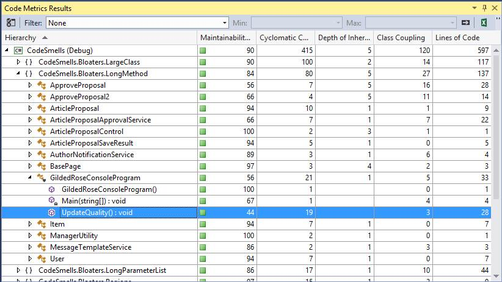
I am thinking...
We totally need another code counter!
Has anyone else considered this?
tokei, loc, polyglot, loccount and gocloc.
SPIN! Calculate some "value" for code complexity.
Goals
Learn Go.Be as fast as possible.
Push CPU limits OR my limits.
Be as accurate as possible.
Estimate complexity.
Design
4 stage pipeline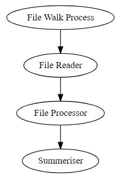
1. File Walking
Go's built in file walk is slow! (comparatively)File walk benchmark
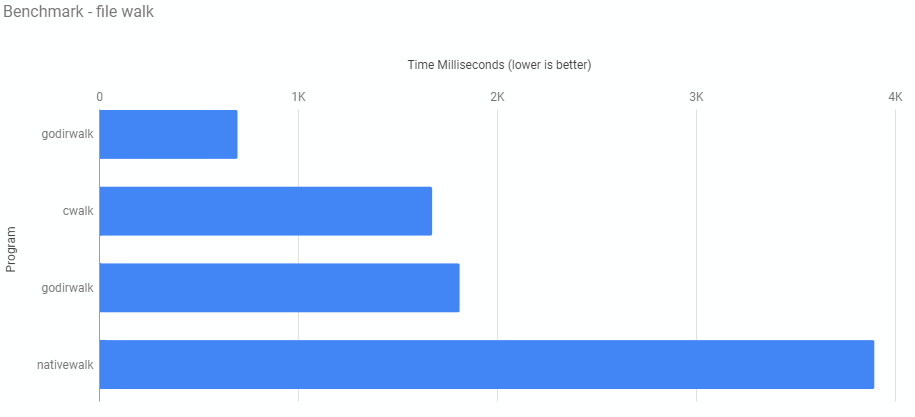
Case 0 Create a directory thats quite deep and put a 10000 files at the end Case 1 Create a directory thats quite deep and put 100 files in each folder Case 2 Create a directory that has a single level and put 10000 files in it Case 3 Create a directory that has a two levels with 10000 directories in the second with a single file in each Case 4 Create a directory that with 10 subdirectories and 1000 files in each Case 5 Create a directory that with 20 subdirectories and 500 files in each Case 6 Create a directory that with 5 subdirectories and 2000 files in each Case 7 Create a directory that with 100 subdirectories and 100 files in each
Still not fast enough
godirwalk an improvement, but not enough
Make parallel!
New problem .gitignore / .ignore files
.gitignore / .ignore
Channels are great for uni-directional work
However ignore files mean we need to alter rules on the fly
2. File Reading
Know your use case! 18,554 bytes.
Memory maps.
Just use ioutil.ReadFile for small files.
$ time scc linux DEBUG 2018-03-27T21:34:26Z: milliseconds to walk directory: 7593 --SNIP-- scc linux 11.02s user 19.92s system 669% cpu 7.623 total
3. File Processor
3 main ways tools count code.
- Use regular expressions.
- Use abstract syntax tree (AST).
- State machine.
Problem
Making scc accurate made it slower than tokei
Mechanical Sympathy
"You don't have to be an engineer to be be a racing driver, but you do have to have Mechanical Sympathy."
Jackie Stewart looking cool
How to Go fast 2019
"The key to making programs fast is to make them do practically nothing"
Do as little as possible.
On many cores.
Make it easy to do the next thing.
Go Fast - Measure
Your bottleneck is often not what you expect.
pprof
(pprof) top10
Showing nodes accounting for 49.46s, 89.12% of 55.50s total
Showing top 10 nodes out of 83
flat flat% sum% cum cum%
20.67s 37.24% 37.24% 20.70s 37.30% runtime.cgocall
17.41s 31.37% 68.61% 25.54s 46.02% github.com/boyter/scc/processor.countStats
Flame Graphs
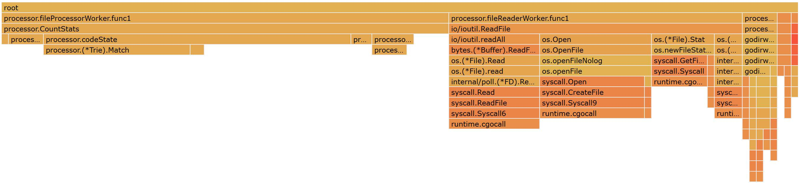Go Fast - Benchmark
In god we trust. Everyone else bring data.
Go benchmark tools are pretty good.
Code speaks volumes. Prove it.
Byte Comparison
Which is fastest?
equal := reflect.DeepEqual(one, two)equal := bytes.Equal(one, two)equal := true
for j := 0; j < len(one); j++ {
if one[j] != two[j] {
equal = false
break
}
}
Byte Comparison Continued
BenchmarkCheckByteEqualityReflect-8 5000000 344.00 ns/op BenchmarkCheckByteEqualityBytes-8 300000000 5.52 ns/op BenchmarkCheckByteEqualityLoop-8 500000000 3.76 ns/op
Why?
Loop & Check VS Change & Loop
| 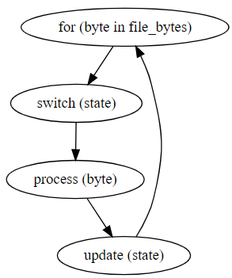 | 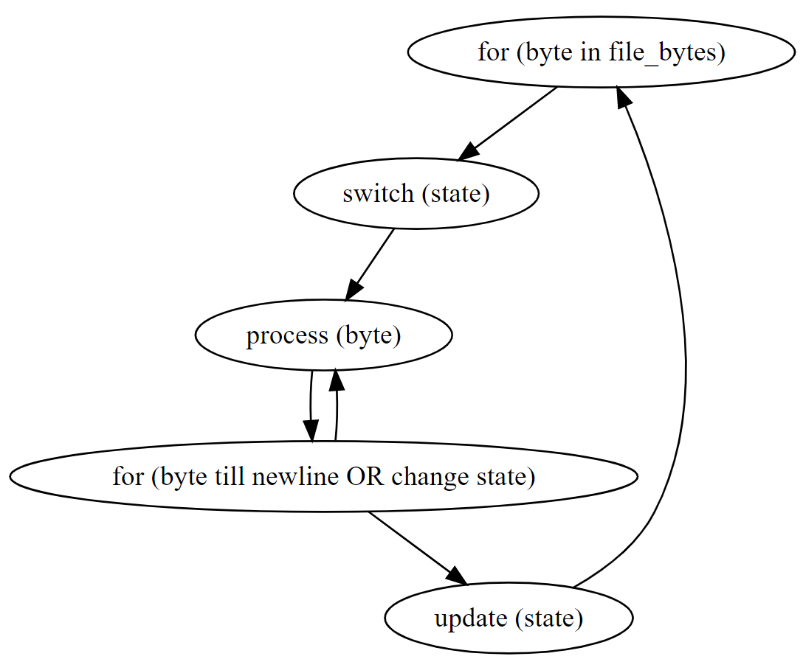 |
Loop & Check VS Change & Loop
Benchmark #1: ./scc1 linux Time (mean ± σ): 2.343 s ± 0.097 s [User: 27.740 s, System: 0.868 s] Range (min … max): 2.187 s … 2.509 s Benchmark #1: ./scc2 linux Time (mean ± σ): 1.392 s ± 0.019 s [User: 19.415 s, System: 0.825 s] Range (min … max): 1.367 s … 1.430 s
Why?
if statement Ordering
Serious micro-optimisation.
$ hyperfine -m 50 'scc1 cpython' Benchmark #1: scc1 cpython Time (mean ± σ): 522.9 ms ± 9.3 ms [User: 1.890 s, System: 1.740 s] Range (min … max): 510.1 ms … 577.7 ms $ hyperfine -m 50 'scc2 cpython' Benchmark #1: scc2 cpython Time (mean ± σ): 491.0 ms ± 10.2 ms [User: 1.628 s, System: 1.763 s] Range (min … max): 476.3 ms … 539.5 ms
BUT in tight loops...
Algorithms
How to check for conditions?
/* /** <%-- --> # //
for if each while switch && || != ==Loop. Bit-Masks. Trie
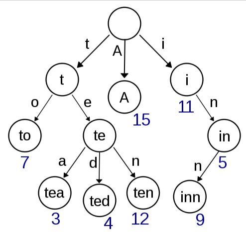
A trie for keys "A", "to", "tea", "ted", "ten", "i", "in", and "inn". Mailinator blog about Trie.
Garbage Collector
Not tune-able. On/Off.
Turn off till some threshold.
Lazy Loading
Support 200+ languages.
Also caching of filenames -> language
Most noticeable with smaller repositories
Benchmark #1: scc-2.0.0 redis Time (mean ± σ): 124.4 ms ± 2.4 ms [User: 168.6 ms, System: 289.1 ms] Range (min … max): 120.0 ms … 128.4 ms Benchmark #1: scc-2.1.0 redis Time (mean ± σ): 81.6 ms ± 5.0 ms [User: 173.8 ms, System: 265.4 ms] Range (min … max): 75.5 ms … 97.1 ms
Annoyances (edge cases)
Verbatim strings
Nested Multi-line Comments
D-Lang
Python DocString's
Byte Order Marks (BOM)
4. Summerise
Limited output (thankfully).
String concatenation benchmark
BenchmarkConcat-8 1000000 64850.00 ns/op BenchmarkBuffer-8 200000000 6.76 ns/op BenchmarkCopy-8 1000000000 3.06 ns/op BenchmarkStringBuilder-8 200000000 7.74 ns/op
Using StringBuilder to ensure >= Go 1.10
Results
─────────────────────────────────────────────────────────────────────────────── Language Files Lines Blanks Comments Code Complexity ─────────────────────────────────────────────────────────────────────────────── Go 22 6506 1075 273 5158 1116 ─────────────────────────────────────────────────────────────────────────────── processor/workers_test.go 1492 278 32 1182 271 processor/workers.go 734 106 78 550 181 processor/formatters.go 699 104 12 583 144 processor/detector_test.go 378 84 1 293 99 processor/formatters_test.go 863 96 2 765 71 processor/file.go 231 39 9 183 54 processor/file_test.go 327 68 7 252 53 processor/detector.go 210 40 20 150 52 processor/processor.go 416 89 58 269 45 ~ocessor/workers_tokei_test.go 247 36 1 210 40 ~or/workers_regression_test.go 150 30 4 116 32 processor/helpers_test.go 60 13 0 47 20 scripts/include.go 79 16 8 55 15 processor/structs.go 183 20 17 146 14 processor/processor_test.go 80 18 0 62 11 processor/cocomo_test.go 35 7 3 25 6 processor/structs_test.go 30 7 0 23 4 processor/helpers.go 30 5 3 22 2 main.go 212 7 6 199 2 processor/cocomo.go 26 5 6 15 0 processor/constants.go 5 1 0 4 0 examples/language/go.go 19 6 6 7 0
Redis Benchmark
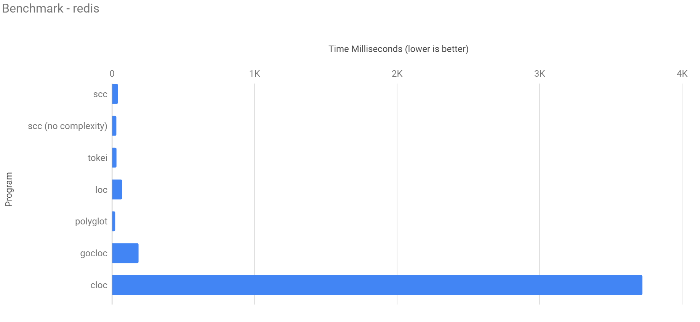Fair Benchmarks
No such thing.
Languages.
Ignore Files.
String Support.
scc estimates complexity.
Tried to create one to be as fair as possible.
Stupidly risky demo
Benchmark slides below if demo gods displeased
Artificial Benchmark
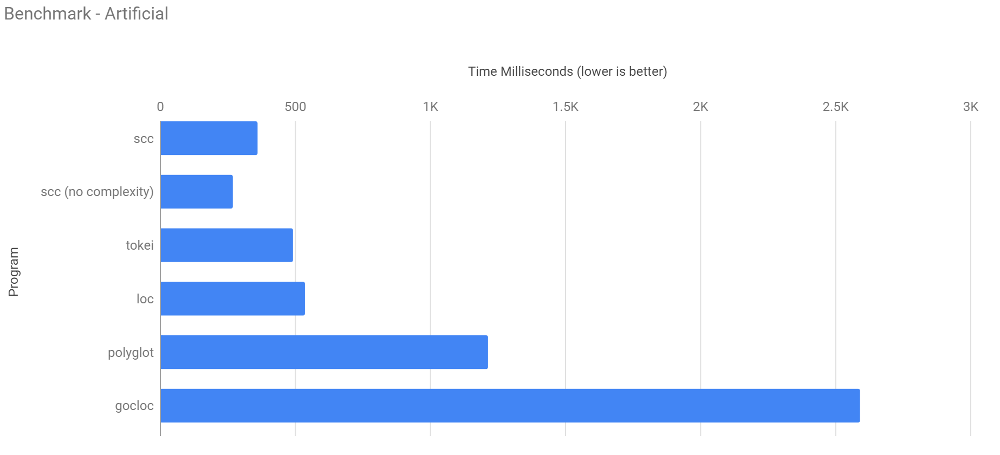Linux Kernel Benchmark
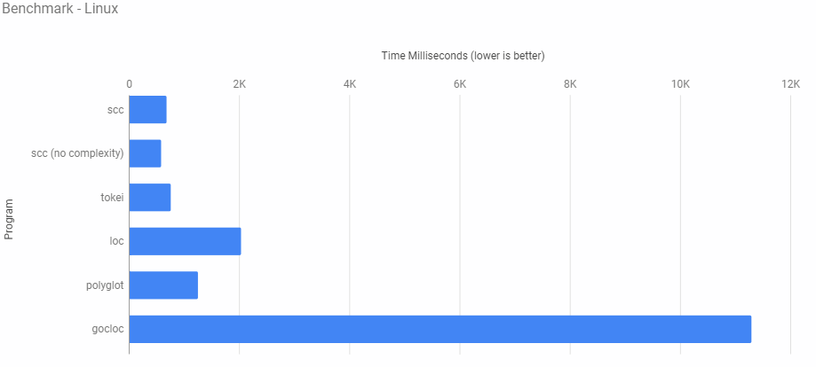10 copies of Linux
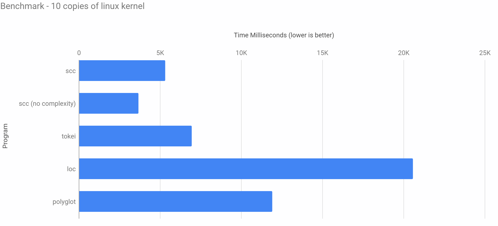SO! Can a crusty Go program outperform a well written Rust Project?
YES!
But all of this would work in Rust/ATS/C just as well
But feel free to boast when people mention Rust anyway
Whats the cost?
THANK YOU
Massive thank you to all contributors to scc